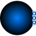

FixedBoundaryBoundary source component |

|
Information
This information is part of the Modelica Standard Library maintained by the Modelica Association.
Model FixedBoundary defines constant values for boundary conditions:
- Boundary pressure or boundary density.
- Boundary temperature or boundary specific enthalpy.
- Boundary composition (only for multi-substance or trace-substance flow).
Note, that boundary temperature, density, specific enthalpy, mass fractions and trace substances have only an effect if the mass flow is from the Boundary into the port. If mass is flowing from the port into the boundary, the boundary definitions, with exception of boundary pressure, do not have an effect.
Parameters (9)
| nPorts |
Value: 0 Type: Integer Description: Number of ports |
|---|---|
| use_p |
Value: true Type: Boolean Description: Select p or d |
| p |
Value: Medium.p_default Type: AbsolutePressure (Pa) Description: Boundary pressure |
| d |
Value: if use_T then Medium.density_pTX(Medium.p_default, Medium.T_default, Medium.X_default) else Medium.density_phX(Medium.p_default, Medium.h_default, Medium.X_default) Type: Density (kg/m³) Description: Boundary density |
| use_T |
Value: true Type: Boolean Description: Select T or h |
| T |
Value: Medium.T_default Type: Temperature (K) Description: Boundary temperature |
| h |
Value: Medium.h_default Type: SpecificEnthalpy (J/kg) Description: Boundary specific enthalpy |
| X |
Value: Medium.X_default Type: MassFraction[Medium.nX] (kg/kg) Description: Boundary mass fractions m_i/m |
| C |
Value: Medium.C_default Type: ExtraProperty[Medium.nC] Description: Boundary trace substances |
Connectors (1)
| ports |
Type: FluidPorts_b[nPorts] |
|---|
Components (2)
| medium |
Type: BaseProperties Description: Medium in the source |
|
|---|---|---|
| state |
Type: ThermodynamicState |
Used in Examples (4)
|
Modelica.Fluid.Examples Model of a pumping system for drinking water |
|
|
Modelica.Fluid.Examples.DrumBoiler Complete drum boiler model, including evaporator and supplementary components |
|
|
Modelica.Fluid.Examples.TraceSubstances Demonstrates a room volume with CO2 accumulation |
|
|
Modelica.Fluid.Examples.TraceSubstances Demonstrates a room volume with CO2 controls |